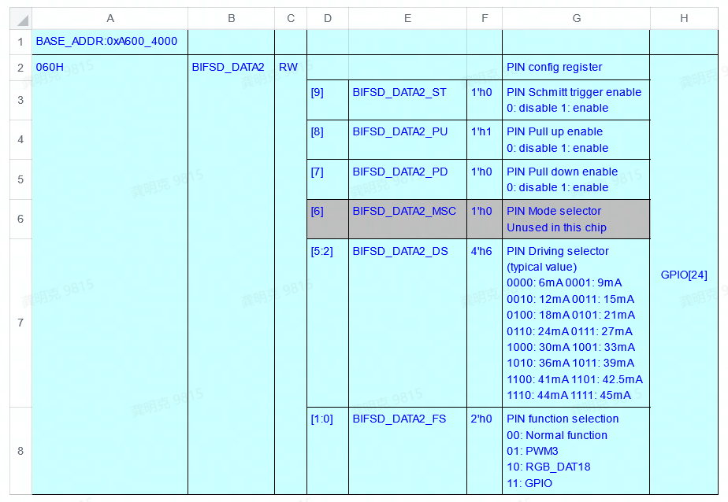
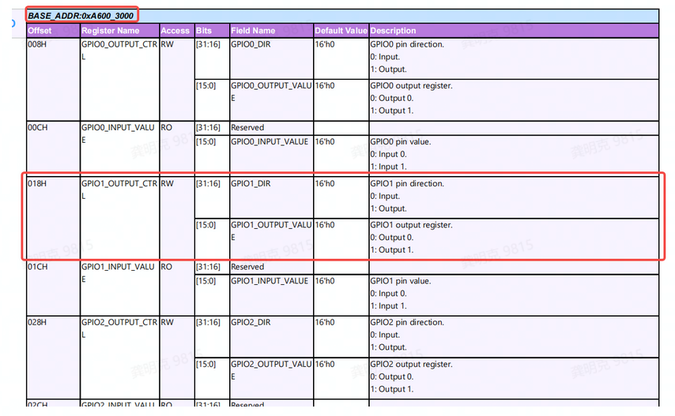
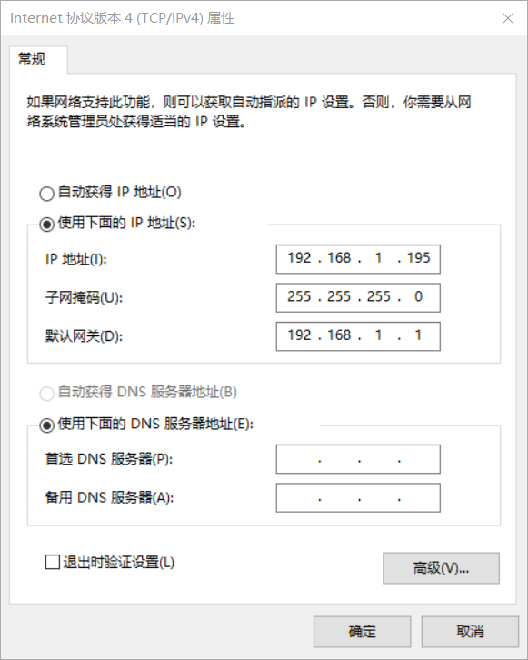
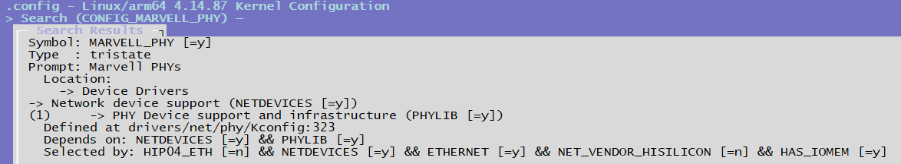

4.3.15. PHY 驱动调试指南
4.3.15.1. 前言
PHY（Port Physical Layer), 是一个对OSI模型实体层的共同简称。我们通常意义的以太网PHY芯片用于连接以太网MAC设备（典型的如集成了EMAC控制器的地平线征程/旭日芯片）和具体传输介质的芯片。本文以Marvell 88E1512 PHY为例，介绍地平线X3 GMAC网卡适配PHY的过程。
4.3.15.2. 地平线芯片Ethernet-PHY相关能力与约束
地平线Ethernet-PHY接口能力介绍
支持全双工/半双工模式。
支持100Mbps及1000Mbps，不支持10Mbps。
支持RGMII、RMII类型MII数据接口，不支持其他接口类型。
支持MDIO接口，X3/J3/J5支持 Clause22，J5支持Clause 45。MDIO接口时钟可调（缺省2M，根据IEEE 802.3，建议时钟范围在1M-2.5之间，另外如无特殊需求不建议调整）。
支持1.8V电源域，不支持3.3V及其他电源域。
支持输出一路25MHz的EPHY_CLK作为外部PHY的参考时钟。
不支持clock delay，需要phy或者switch支持相关feature并开启。
不支持额外的复位引脚，如有需要需可以根据电路板实际情况复用其他引脚。
不支持phy的中断模式，只支持轮询读取phy的状态。
电路设计checklist（系统软件相关）
MII接口（rgmii/rmii/mdio）电平只支持1.8V电源域。
PHY复位引脚如果使用GPIO驱动，确保使用的PIN，复位逻辑，复位时间等与dts描述一致。
PHY复位引脚连接RC或其他复位电路，确保在被访问之前复位芯片处于复位完成状态。
地平线芯片不支持调整clock delay，所以需要PHY默认开启此功能或者提供对应的驱动开启此功能。
4.3.15.3. Uboot下PHY的适配
编译配置
在uboot下，GMAC驱动会通过MDIO总线读取PHY的0x2和0x3寄存器的值，也就是PHY的ID标识，以Marvel 88E1512为例，0x2寄存器的值为0x0141,0x3寄存器的值为0x0dd0，因此88E1512的PHY ID为0x01410dd0，在uboot编译的config文件中打开marvell PHY的编译开关以后，marvell 88E1512的PHY 驱动会在probe的时候将PHY ID注册到uboot中，X3 GMAC驱动就可以根据读取到的PHY ID识别到 88E1512。
打开marvell phy的编译开关
# uboot/configs/xj3_soc_defconfig
CONFIG_PHY_MARVELL=y
DTS配置
在新的项目dts中，直接引用hobot-xj3.dtsi中定义的gmac节点,然后添加对应的属性即可，例如
new_project.dts:
#include "hobot-xj3.dtsi"
......
&gmac {
status = "okay";
phyaddr = <0xe>; //phy地址 当前phy地址为0xe
phy-mode = "rgmii-id"; //phy模式，如果是rmii，则填入phy-mode = "rmii-id"；
};
......
X3/J3只支持增加PHY地址和PHY模式两种属性。 不支持在dts中指定reset gpio。 不支持fixed（接switch）模式。 phy-mode只支持”rmii-id”和”rgmii-id”两种模式，不支持其他模式。
由于X3 GMAC不支持配置RGMII接口上TX RX 的Timing Delay，因此需要在PHY的配置中打开TX Timing Delay和RX Timing Delay，一般在dts中将phy-mode设置为“rgmii-id”即可。
static const char * const phy_interface_strings[] = {
...
[PHY_INTERFACE_MODE_RMII] = "rmii",
[PHY_INTERFACE_MODE_RGMII] = "rgmii",
[PHY_INTERFACE_MODE_RGMII_ID] = "rgmii-id", # rx and tx delay
[PHY_INTERFACE_MODE_RGMII_RXID] = "rgmii-rxid", # rx delay
[PHY_INTERFACE_MODE_RGMII_TXID] = "rgmii-txid", # rx delay
...
};
如果客户使用的PHY地址和地平线参考硬件方案不一致（地平线方案PHY地址为0xe），则客户需要在 DTS中更改下phyaddr的值。
PIN驱动能力配置
如果在缺省配置的情况下，信号电气特性或时序不满足需求，可以尝试根据实际的波形情况对相关的PIN的上下拉，驱动能力等进行配置。 X3/J3-uboot下不支持dts配置PIN驱动能力，需要根据最终的配置直接修改底层寄存器配置，具体需要修改的寄存器为（0xA600_4098-0xA600_40D0），修改寄存器的位置推荐放置在eqos_probe的入口处。具体寄存器配置见引用文件《RM-2501-5-J3 Register Reference Manual-GPIO&PIN-V1.1.pdf》。
EMAC驱动源码适配方法
如果是标准PHY芯片，且电路设计参考dvb，cvb，sdb等参考设计，则一般情况下无需修改。
如果PHY的复位引脚使用的与参考设计不同，则建议在eqos_probe入口处完成复位逻辑。
例如板卡使用BIFSD_DATA2作为复位引脚，PHY芯片低电平复位有效，复位时间至少持续10ms，且复位后20ms后才可访问PHY寄存器，可按照如下步骤进行进行适配：
1.根据引用文档《PL-2501-3-J3 PIN SW Reg-V1.1.xls》，查到BIFSD_DATA2对应的GPIO编号为GPIO[24](也就是GPIO1.8，见工作表PIN Mux List)， 对应PIN引脚功能配置寄存器为0xA600_4060

2.根据引用文档《RM-2501-5-J3 Register Reference Manual-GPIO&PIN-V1.1.pdf》，确认GPIO g roup 1的方向和输出值配置寄存器为0x6000_3018，其中高16bit用于配置方向，低16bit用于配置输出值。

3.根据PHY芯片的要求，设计复位逻辑，例如：
static int eqos_probe(struct udevice *dev)
{
unsigned int reg_val;
......
// 设置PIN功能为GPIO
reg_val = readl(0xA6004060);
reg_val |= 0x3;
writel(reg_val, 0xA6004060);
......
// 设置GPIO1.8方向为输出
reg_val = readl(0xA6003018);
reg_val |= 0x01000000;
writel(reg_val, 0xA6003018);
......
// 复位逻辑
reg_val = readl(0xA6003018);
reg_val &= ~0x00000100; // 拉低GPIO1.8
mdelay(10); // 拉低持续10ms
reg_val = readl(0xA6003018);
reg_val |= 0x00000100; // 拉高GPIO1.8
mdelay(20);
......
// 可正常访问PHY寄存器
}
如果板卡使用其他引脚，可以参照上述步骤实现即可。
如果PHY芯片的自协商时间较长（超过4s），可修改宏PHY_ANEG_TIMEOUT（uboot/include/phy.h）延长超时判定时间。
无论在uboot阶段是否使用网卡，都需要对uboot的dts做正确的配置。
测试方法
在uboot下测试网络是否连通时，可以将X3的网口和PC电脑的网口直连，设置PC网卡为固定地址，例如：
IP地址：192.168.1.195
掩码：255.255.255.0
网关：192.168.1.1

然后通过串口方式连接开发板，启动时按任意键进入uboot命令行，执行以下命令进行测试：
Hobot>setenv ipaddr 192.168.1.10
Hobot>ping 192.168.1.195
如果打印出”host 192.168.1.195 is alive”则表示网络正常。
常见问题
EQOS_DMA_MODE_SWR stuck
如果打印“EQOS_DMA_MODE_SWR stuck”，则表示GMAC soft reset失败，原因是由于GMAC未能检测到PHY RX CLK的输入，此时可能是PHY未能正常复位或者PHY时钟输入异常导致PHY RX CLK 输出异常。
4.3.15.4. Kernel下PHY的适配
编译配置
在kernel下，同样需要打开对应PHY的编译选项，将PHY的驱动编译到Kernel里：
CONFIG_MARVELL_PHY=y

DTS配置
在新的项目dts中，直接引用hobot-xj3.dtsi中定义的gmac节点,然后添加对应的属性即可，例如：
new_project.dts:
#include "hobot-xj3.dtsi"
......
ðernet {
status = "okay";
phy-handle = <&phy1>;
phy-mode = "rgmii-id"; //如果是rmii，此处填入phy-mode = "rmii-id"
mdio {
#address-cells = <0x1>;
#size-cells = <0x0>;
#ifndef FIXED_PHY
// PHY设备
/* EPHY_CLK(gpio2.6) is in gpio mode and use it as RESET for PHY */
// 复位低电平有效，如果是高电平有效，则填入“GPIO_ACTIVE_HIGH”
// 如果phy芯片不依赖gpio，则可不填此项
reset-gpios = <&gpios 38 GPIO_ACTIVE_LOW>;
/* reset pin must assert at least extra delay 50ms for MARVELL 88EA1512 */
reset-delay-us = <20000>;
/*
注意reset_extra_us用于描述在复位之后额外等待的时间，单位us。
此为自定义属性，在较老版本中不支持，如果需要可以打上如下参考patch:
*/
reset_extra_us = <60000>;
phy1: phy@e {
//"ethernet-phy-ieee802.3-c22"必填项，且不支持X3/J3不支持C45
compatible = "marvell,88E1111","ethernet-phy-ieee802.3-c22";
reg = <0xe>; //当前phy地址为0xe, 与phy@e一致
};
#endif
};
#ifdef FIXED_PHY
// switch 设备
// 如果是连接一个switch设备，则可以添加如下节点：
// 当前例子中：id为1（保证唯一即可），全双工，1000M，不支持Pause与Asym Pause
// 参考：kernel/Documentation/devicetree/bindings/net/ethernet-controller.yaml
fixed-link = <1 1 1000 0 0>;
#endif
};
如果当前版本的X3/J3版本不支持“reset_extra_us”属性且phy有此需要， 可参考如下patch：
0001-ethernet-phy-fix-XJ3-4013-Fixed-ETH-PHY-initializati.patch
pinctrl-dts适配方法
如果需要调整网卡相关PIN的驱动能力、上下拉等配置，可以对kernel/arch/arm64/boot/dts/hobot/hobot-pinctrl-xj3.dtsi进行必要的修改：
pinctrl: pinctrl@0xA6004000 {
......
eth_func: eth_func {
pinctrl-single,pins = <
0x098 (MUX_F3 | DRIVE1_06MA | SCHMITT1_DIS | PULL1_DOWN)
0x09c (MUX_F0 | DRIVE1_03MA | SCHMITT1_DIS | PULL1_UP)
0x0a0 (MUX_F0 | DRIVE1_03MA | SCHMITT1_DIS | PULL1_UP)
0x0a4 (MUX_F0 | DRIVE1_03MA | SCHMITT1_ENA | PULL1_DOWN)
0x0a8 (MUX_F0 | DRIVE1_03MA | SCHMITT1_DIS | PULL1_UP)
0x0ac (MUX_F0 | DRIVE1_03MA | SCHMITT1_DIS | PULL1_UP)
0x0b0 (MUX_F0 | DRIVE1_03MA | SCHMITT1_DIS | PULL1_UP)
0x0b4 (MUX_F0 | DRIVE1_03MA | SCHMITT1_DIS | PULL1_UP)
0x0b8 (MUX_F0 | DRIVE1_03MA | SCHMITT1_DIS | PULL1_DOWN)
0x0bc (MUX_F0 | DRIVE1_12MA | SCHMITT1_DIS | PULL1_DIS)
0x0c0 (MUX_F0 | DRIVE1_12MA | SCHMITT1_DIS | PULL1_DIS)
0x0c4 (MUX_F0 | DRIVE1_12MA | SCHMITT1_DIS | PULL1_DIS)
0x0c8 (MUX_F0 | DRIVE1_12MA | SCHMITT1_DIS | PULL1_DIS)
0x0cc (MUX_F0 | DRIVE1_12MA | SCHMITT1_DIS | PULL1_DIS)
0x0d0 (MUX_F0 | DRIVE1_12MA | SCHMITT1_DIS | PULL1_DIS)
>;
};
......
}
例子中依次定义如下PIN的配置：EPHY_CLK/MDCK/MDIO/RGMII_RX_CLK/RGMII_RXD0/RGMII_RXD1/RGMII_RXD2/RGMII_RXD3/RGMII_RX_DV/RGMII_TX_CLK/RGMII_TXD0/RGMII_TXD1/RGMII_TXD2/RGMII_TXD3/RGMII_TX_EN
DRIVE1_XXMA 属性用于配置驱动能力，可选的值为： DRIVE1_03MA/06MA/09MA/12MA/17MA/20MA/22MA/25MA/33MA/35MA/37MA/39MA/41MA/42.5MA/44MA/45MA
EMAC驱动适配方法
MDIO速率调整方法（如无必要不建议调整）
X3/J3芯片对于MDIO总线速率调整的部分代码位于xj3_mdio_set_csr函数中，核心是根据当前的时钟树计算分频值，并将最终的分频值保存在priv->csr_val变量中， 具体的分频计算方法：
priv->csr_val = 0 ， mdio时钟频率 = 参考时钟/42
priv->csr_val = 1 ， mdio时钟频率 = 参考时钟/62
priv->csr_val = 2 ， mdio时钟频率 = 参考时钟/16
priv->csr_val = 3 ， mdio时钟频率 = 参考时钟/26
priv->csr_val = 4 ， mdio时钟频率 = 参考时钟/102
priv->csr_val = 5 ， mdio时钟频率 = 参考时钟/124
priv->csr_val = 6 ， mdio时钟频率 = 参考时钟/204
priv->csr_val = 7 ， mdio时钟频率 = 参考时钟/324
当前参考时钟为250MHz，csr_val设置为5，即最终的MDIO时钟设置为250MHz/124 = 2MHz。如果需要修改，则根据上图的配置方法修改priv->csr_val值即可。
RMII-PHY适配
1.RMII的kernel驱动缺少对于寄存器0xA1000384的bit 0与bit 8的配置，当前采用的是uboot中配置的方法，这种方法就要求对uboot的dts正确配置。如果无法保证这一点，也可以在kernel的MAC驱动的probe函数的较晚位置设置寄存器0xA1000384。
2.RMII-PHY在100M模式下，需要修改xj3_set_speed函数中对于目标时钟的调整，参考修改如下：
diff --git a/drivers/net/ethernet/hobot/hobot_eth.c b/drivers/net/ethernet/hobot/hobot_eth.c
--- a/drivers/net/ethernet/hobot/hobot_eth.c
+++ b/drivers/net/ethernet/hobot/hobot_eth.c
@@ -1175,11 +1175,11 @@ static void xj3_set_speed(struct xj3_priv *priv) {
rate_L2 = clk_round_rate(priv->plat->xj3_mac_div_clk, target);
clk_set_rate(priv->plat->xj3_mac_div_clk, rate_L2);
} else if (phydev->speed == SPEED_100) {
- target = 125000000;
+ target = 150000000;
rate_L1 = clk_round_rate(priv->plat->xj3_mac_pre_div_clk, target);
clk_set_rate(priv->plat->xj3_mac_pre_div_clk, rate_L1);
- target = 25000000;
+ target = 50000000;
rate_L2 = clk_round_rate(priv->plat->xj3_mac_div_clk, target);
clk_set_rate(priv->plat->xj3_mac_div_clk, rate_L2);
测试方法
同样地，将X3的网口和PC电脑的网口直连。
设置PC网卡为固定地址：
IP地址：192.168.1.195
掩码：255.255.255.0
网关：192.168.1.1
然后进入X3的kernel shell下，设置X3的ip地址：
ifconfig eth0 192.168.1.10 netmask 255.255.255.0
route add default gw 192.168.1.1
再执行ping命令测试网络是否连通：
ping 192.168.1.195
PING 192.168.1.195 (192.168.1.195) 56(84) bytes of data.
64 bytes from 192.168.1.195: icmp_seq=1 ttl=128 time=0.801 ms
4.3.15.5. 常用工具介绍
uboot下工具
mii:主要用于读写phy的寄存器。
mii - MII utility commands
Usage:
mii device - list available devices
mii device <devname> - set current device
mii info <addr> - display MII PHY info
mii read <addr> <reg> - read MII PHY <addr> register <reg>
mii write <addr> <reg> <data> - write MII PHY <addr> register <reg>
mii modify <addr> <reg> <data> <mask> - modify MII PHY <addr> register <reg>
updating bits identified in <mask>
mii dump <addr> <reg> - pretty-print <addr> <reg> (0-5 only)
Addr and/or reg may be ranges, e.g. 2-7.
例如：
// 读寄存器
Hobot>mii read 0xe 2
0141
// 读寄存器，并进行解析
Hobot>mii dump 0xe 0
0. (1140) -- PHY control register --
(8000:0000) 0.15 = 0 reset
(4000:0000) 0.14 = 0 loopback
(2040:0040) 0. 6,13 = b10 speed selection = 1000 Mbps
(1000:1000) 0.12 = 1 A/N enable
(0800:0000) 0.11 = 0 power-down
(0400:0000) 0.10 = 0 isolate
(0200:0000) 0. 9 = 0 restart A/N
(0100:0100) 0. 8 = 1 duplex = full
(0080:0000) 0. 7 = 0 collision test enable
(003f:0000) 0. 5- 0 = 0 (reserved)
// 查看当前mii设备列表
Hobot# mii device
MII devices: 'ethernet@59110000' 'ethernet@59120000'
Current device: 'ethernet@59110000'
// 切换mii当前使用的设备
Hobot# mii device ethernet@59120000
Hobot# mii device
MII devices: 'ethernet@59110000' 'ethernet@59120000'
Current device: 'ethernet@59120000'
md:主要用于读内存/IO寄存器。
md - memory display
Usage:
md [.b, .w, .l, .q] address [# of objects]
例如：
Hobot>md 0xA1000000
a1000000: 01102064 00001010 00000001 00000000 d ..............
a1000010: 0120107d 00001010 00000001 00000000 }. .............
a1000020: 0130107d 00001010 00000001 00000000 }.0.............
a1000030: 01101042 00003000 00000001 00a80000 B....0..........
a1000040: 01101044 00001010 00000001 00000000 D...............
......
mw:主要用于写内存/IO寄存器
mw - memory write (fill)
Usage:
mw [.b, .w, .l, .q] address value [count]
例如：
Hobot>mw 0x20000000 0x1
Hobot>md 0x20000000
20000000: 00000001 ffffffff ffffffff ffffffff ................
20000010: ffffffff ffffffff ffffffff ffffffff ................
......
ping:用于探测网络连通性。
ping - send ICMP ECHO_REQUEST to network host
Usage:
ping pingAddress
Hobot>setenv ipaddr 192.168.1.10 //需要线设置本地ip，应该为同网段的合法ip
Hobot>ping 192.168.1.200
Phy name:Marvell 88E1518
Phy uid:1410dd0
ethernet@A5014000 Waiting for PHY auto negotiation to complete....... done
set mac_div_clk = 125000000Using ethernet@A5014000 device
host 192.168.1.200 is alive // 测试结果为网络通常
kernel下工具介绍
ethtool:网络状态查看/修改工具。
查看当前网络link状态
root@x3dvbx3-samsung1G-3200:~# ethtool eth0
Settings for eth0:
Supported ports: [ TP MII ]
Supported link modes: 10baseT/Full //当前网卡支持的能力
100baseT/Full
1000baseT/Full
Supported pause frame use: Symmetric Receive-only
Supports auto-negotiation: Yes
Supported FEC modes: Not reported
Advertised link modes: 10baseT/Full //广播的本方能力
100baseT/Full
1000baseT/Full
Advertised pause frame use: No
Advertised auto-negotiation: Yes //自协商开启
Advertised FEC modes: Not reported
Link partner advertised link modes: 10baseT/Half 10baseT/Full //对端能力
100baseT/Half 100baseT/Full
1000baseT/Full
Link partner advertised pause frame use: Symmetric Receive-only
Link partner advertised auto-negotiation: Yes
Link partner advertised FEC modes: Not reported
Speed: 1000Mb/s //协商后的速率，双共，端口类型等
Duplex: Full
Port: MII
PHYAD: 14 // PHY 地址为14
Transceiver: internal
Auto-negotiation: on
Link detected: yes
// 修改网卡连接能力，比如修改为固定100M双规模式
ethtool -s eth0 autoneg off speed 100 duplex full
之后再通过ethtool读取最新的状态
root@x3dvbx3-samsung1G-3200:~# ethtool eth0
Settings for eth0:
Supported ports: [ TP MII ]
Supported link modes: 10baseT/Full //网卡支持的能力
100baseT/Full
1000baseT/Full
Supported pause frame use: Symmetric Receive-only
Supports auto-negotiation: Yes
Supported FEC modes: Not reported
Advertised link modes: 100baseT/Full //只广播100M能力
Advertised pause frame use: No
Advertised auto-negotiation: No //关闭自协商
Advertised FEC modes: Not reported
Speed: 100Mb/s //link状态，100M全双工
Duplex: Full
Port: MII
PHYAD: 14 // PHY 地址为14
Transceiver: internal
Auto-negotiation: off
Link detected: yes
phytool:phy reg读写工具（X3/J3老版本不支持，J5支持）
Usage: phytool read IFACE/ADDR/REG
phytool write IFACE/ADDR/REG <0-0xffff>
phytool print IFACE/ADDR[/REG]
where
ADDR := C22 | C45
C22 := <0-0x1f>
C45 := <0-0x1f>:<0-0x1f>
REG := <0-0x1f>
Examples:
phytool read eth0/0:3/1
phytool write eth0/0xa/0 0x1140
phytool print eth0/0x1c
对于X3/J3，较老版本可以打上如下补丁来对phytool进行支持，也可以使用后面介绍的gmac_rw_phy.sh对phy设备进行读写访问。
0001-eth-phy-feat-XJ3-4413-Add-code-supported-by-the-phyt.patch
gmac_rw_phy.sh（仅X3/J3）:X3/J3提供的读写PHY寄存器的工具，需要说明的时，由于kernel也一直在进行对phy的访问，所以建议使用此工具时多次操作以确认访问成功。
gmac_rw_phy.sh是X3/J3芯片提供的一个读写寄存器的脚本，其使用方法如下：
# 常用命令
# 读Phy=0xe（地址）、reg=0连续32个寄存器
# ./gmac_rw_phy.sh 0xe read_phy 0 32
#
# 写Phy=0xe（地址）、reg=1、val=0xc83d
# ./gmac_rw_phy.sh 0xe write_phy 1 0xc83d
例如：
root@x3dvbx3-samsung1G-3200:/userdata# ./gmac_rw_phy.sh 0xe read_phy 0 32
0x2100 0x2100 0x0141 0x0dd4 0x0141 0x0000 0x0004 0x2001
0x0000 0x0200 0x0000 0x0000 0x0000 0x0003 0x0000 0x3000
0x3070 0x6c08 0x0000 0x6400 0x0020 0x0000 0x0000 0x0000
0x0000 0x0000 0x0040 0x0000 0x0000 0x0000 0x0000 0x0000
tcpdump/wireshark:wireshark是windows版本的抓包工具，功能强大使用也很简单，此处不再详述。tcpdump是linux环境工具，地平线芯片支持该工具的精简版本（部分很老的版本没有，后附文件供下载），tcpdump工具强大，但对于PHY相关功能，只需要最基本的一些选项即可，例如：
root@x3dvbx3-samsung1G-3200:~# tcpdump -h
tcpdump version 4.9.2
libpcap version 1.9.1 (with TPACKET_V3)
OpenSSL 1.1.1g 21 Apr 2020
Usage: tcpdump [-aAbdDefhHIJKlLnNOpqStuUvxX#] [ -B size ] [ -c count ]
[ -C file_size ] [ -E algo:secret ] [ -F file ] [ -G seconds ]
[ -i interface ] [ -j tstamptype ] [ -M secret ] [ --number ]
[ -Q in|out|inout ]
[ -r file ] [ -s snaplen ] [ --time-stamp-precision precision ]
[ --immediate-mode ] [ -T type ] [ --version ] [ -V file ]
[ -w file ] [ -W filecount ] [ -y datalinktype ] [ -z postrotate-command ]
[ -Z user ] [ expression ]
//抓取eth0网口上的包
root@x3dvbx3-samsung1G-3200:~# tcpdump -i eth0
tcpdump: verbose output suppressed, use -v or -vv for full protocol decode
listening on eth0, link-type EN10MB (Ethernet), capture size 262144 bytes
08:04:33.567718 IP 192.168.1.10.ssh > 192.168.1.200.51017: Flags [P.], seq 2043263027:2043263219, ack 955812216, win 315, length 192
08:04:33.572145 IP 192.168.1.10.ssh > 192.168.1.200.51017: Flags [P.], seq 192:416, ack 1, win 315, length 224
08:04:33.572376 IP 192.168.1.10.ssh > 192.168.1.200.51017: Flags [P.], seq 416:496, ack 1, win 315, length 80
......
//抓取eth0网口上的包并保存在t1.pcap文件中（*.pcap包可以直接在wireshark中打开）
root@x3dvbx3-samsung1G-3200:~# tcpdump -i eth0 -w /userdata/t1.pcap
tcpdump: listening on eth0, link-type EN10MB (Ethernet), capture size 262144 bytes
ifconfig:ifconfig是linux中用于显示或配置网络设备的工具，ifconfig工具较为强大，但通常在PHY相关的网络应用中只需使用最基本的选项即可，例如：
root@x3dvbx3-samsung1G-3200:/# ifconfig -h
Usage:
ifconfig [-a] [-v] [-s] <interface> [[<AF>] <address>]
[add <address>[/<prefixlen>]]
[del <address>[/<prefixlen>]]
[[-]broadcast [<address>]] [[-]pointopoint [<address>]]
[netmask <address>] [dstaddr <address>] [tunnel <address>]
[outfill <NN>] [keepalive <NN>]
[hw <HW> <address>] [metric <NN>] [mtu <NN>]
[[-]trailers] [[-]arp] [[-]allmulti]
[multicast] [[-]promisc]
[mem_start <NN>] [io_addr <NN>] [irq <NN>] [media <type>]
[txqueuelen <NN>]
[[-]dynamic]
[up|down] ...
<HW>=Hardware Type.
List of possible hardware types:
loop (Local Loopback) slip (Serial Line IP) cslip (VJ Serial Line IP)
slip6 (6-bit Serial Line IP) cslip6 (VJ 6-bit Serial Line IP) adaptive (Adaptive Serial Line IP)
ether (Ethernet) netrom (AMPR NET/ROM) tunnel (IPIP Tunnel)
ppp (Point-to-Point Protocol) arcnet (ARCnet) dlci (Frame Relay DLCI)
frad (Frame Relay Access Device) irda (IrLAP)
<AF>=Address family. Default: inet
List of possible address families:
unix (UNIX Domain) inet (DARPA Internet) inet6 (IPv6)
netrom (AMPR NET/ROM)
// 查看网卡状态
root@x3dvbx3-samsung1G-3200:/# ifconfig eth0
eth0 Link encap:Ethernet HWaddr 00:61:7d:31:9f:b9
inet addr:192.168.1.10 Bcast:192.168.1.255 Mask:255.255.255.0
inet6 addr: fe80::261:7dff:fe31:9fb9/64 Scope:Link
UP BROADCAST RUNNING MULTICAST MTU:1500 Metric:1
RX packets:191166 errors:0 dropped:1 overruns:0 frame:0//统计数据
TX packets:313229 errors:0 dropped:0 overruns:0 carrier:0
collisions:0 txqueuelen:1000
RX bytes:12269756 (11.7 MiB) TX bytes:44393384 (42.3 MiB)
Interrupt:43 Base address:0xa000
// 修改网卡ip地址为192.168.1.100 子网掩码 255.255.255.0
root@x3dvbx3-samsung1G-3200:/# ifconfig eth0 192.168.1.100 netmask 255.255.255.0
root@x3dvbx3-samsung1G-3200:/# ifconfig eth0
eth0 Link encap:Ethernet HWaddr 00:61:7d:31:9f:b9
inet addr:192.168.1.100 Bcast:192.168.1.255 Mask:255.255.255.0
inet6 addr: fe80::261:7dff:fe31:9fb9/64 Scope:Link
UP BROADCAST RUNNING MULTICAST MTU:1500 Metric:1
RX packets:191225 errors:0 dropped:1 overruns:0 frame:0
TX packets:313259 errors:0 dropped:0 overruns:0 carrier:0
collisions:0 txqueuelen:1000
RX bytes:12273296 (11.7 MiB) TX bytes:44398076 (42.3 MiB)
Interrupt:43 Base address:0xa000